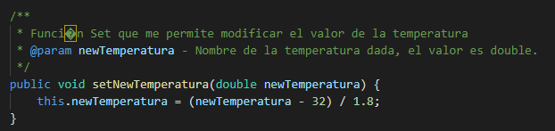
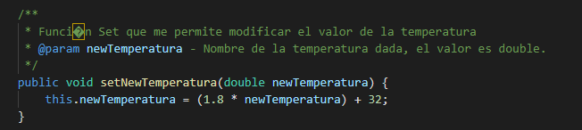
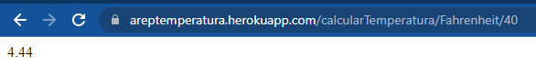

En la siguiente página web, encontramos la API, para la calculadora de conversión de Temperatura. Cabe recalcar que con fines prácticos solo se hizo uso de las siguientes conversiones. De grados Fahrenheit a Celsius y de Celsius a Fahrenheit.
 En la API, se puede llegar a realizar peticiones a través del browser, pasando como parámetro en su identificador los siguientes valores. /calcularTemperatura , luego nos dirigimos al tipo de conversión, /Celsius y finalmente ingresamos el valor. Como se muestra a continuación.
